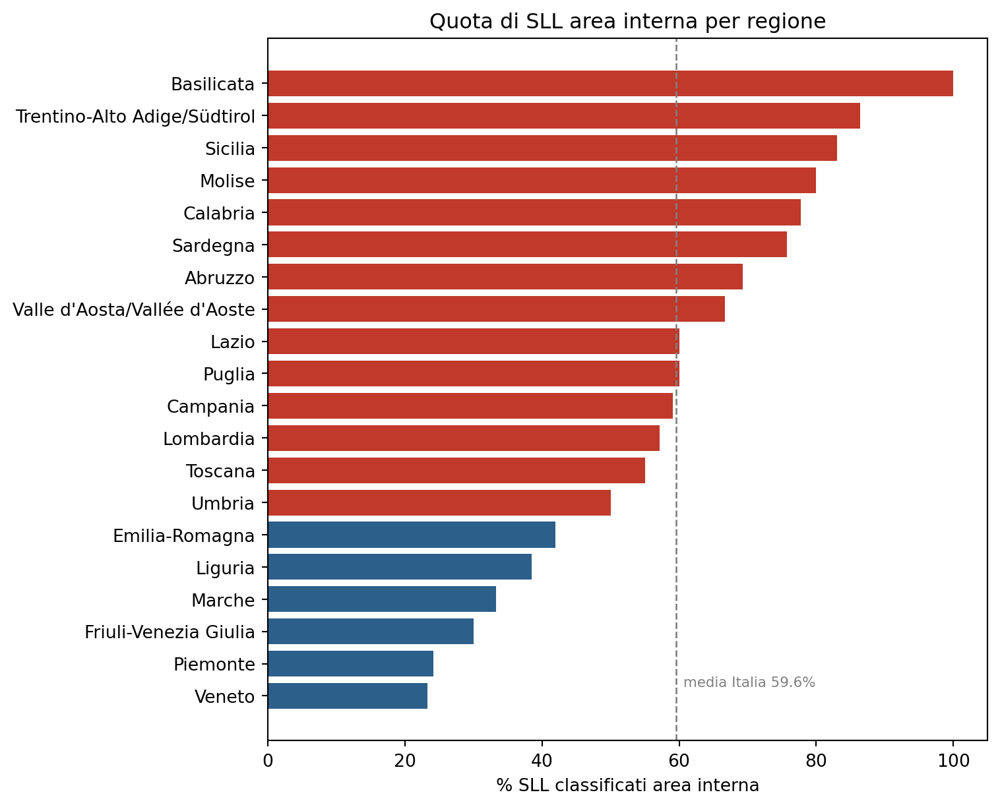
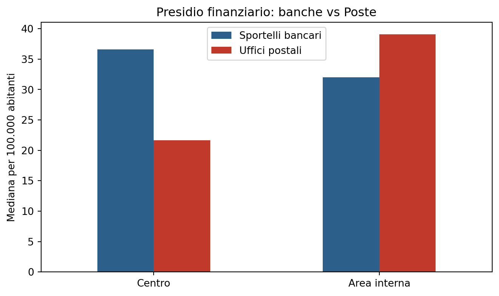

Le aree interne italiane
Geografia, demografia e accesso al credito: un confronto tra centro e periferia sui 515 Sistemi Locali del Lavoro
Paolo Volterra ![]()
Quasi sei Sistemi Locali del Lavoro su dieci in Italia sono classificati “area interna” secondo la Strategia Nazionale Aree Interne: comuni distanti dai poli di erogazione dei servizi essenziali di istruzione, salute e mobilità. Queste aree coprono oltre la metà del territorio nazionale ma ospitano poco più di un terzo della popolazione. Il confronto con i sistemi locali di centro mostra un divario ampio e statisticamente robusto su reddito, occupazione e invecchiamento demografico. Il divario nell’accesso ai servizi finanziari, tuttavia, non passa dove ci si aspetterebbe: la densità di sportelli bancari tradizionali non è significativamente diversa tra aree interne e centro, mentre lo è fortemente quella degli uffici postali, che nelle aree interne restano il presidio finanziario di gran lunga più diffuso. Anche la copertura della banda ultralarga non mostra alcun divario misurabile legato alla classificazione SNAI.
aree interne, SNAI, Strategia Nazionale Aree Interne, Sistemi Locali del Lavoro, spopolamento, divario territoriale, copertura bancaria, uffici postali
1 Introduzione
La Strategia Nazionale per le Aree Interne (SNAI), avviata dal governo italiano nel 2014, classifica i comuni italiani in base alla distanza dai centri che erogano i servizi essenziali di istruzione secondaria, salute ospedaliera e mobilità ferroviaria [1]. La classificazione distingue sei livelli, dal Polo (comune o aggregato di comuni in grado di offrire tutti i servizi essenziali) all’Ultraperiferico (comune a più di 75 minuti di percorrenza dal polo più vicino). I comuni in classe Intermedio, Periferico e Ultraperiferico sono convenzionalmente definiti “area interna”; Polo, Polo intercomunale e Cintura sono il “centro”.
Questo lavoro utilizza la classificazione SNAI più recente, aggiornata al 2020, per misurare quanto le aree interne si differenzino dal resto del paese su un insieme di indicatori economici, demografici e di accesso ai servizi finanziari. L’unità di analisi è il Sistema Locale del Lavoro (SLL), l’aggregazione di comuni definita dall’ISTAT sulla base degli spostamenti pendolari, più adatta di un confronto comune per comune a rappresentare un mercato del lavoro e un bacino di servizi effettivamente integrato.
2 Fonti e metodo
La classificazione di policy è disponibile a livello comunale attraverso il sistema informativo territoriale dell’ISTAT [2]. Su 7.894 comuni censiti, la distribuzione tra le sei classi SNAI è la seguente.
| Comuni | % | |
|---|---|---|
| AREE_INT_2020 | ||
| A -- Polo | 182 | 2.3 |
| B -- Polo intercomunale | 60 | 0.8 |
| C -- Cintura | 3820 | 48.4 |
| D -- Intermedio | 1926 | 24.4 |
| E -- Periferico | 1524 | 19.3 |
| F -- Ultraperiferico | 382 | 4.8 |
Tabella 1: Distribuzione dei comuni italiani per classe SNAI (2020)
Le classi D, E, F – area interna – raggruppano 3.832 comuni, quasi la metà del totale nazionale.
Per portare la classificazione al livello di Sistema Locale del Lavoro, a ciascuno dei 515 SLL italiani è stata assegnata la quota di comuni classificati area interna al suo interno. Un SLL è definito “area interna” se più della metà dei comuni che lo compongono ricade nelle classi D, E o F. Questa soglia produce una variabile binaria usata per i confronti di sintesi; le verifiche di robustezza in questo documento usano anche la quota continua, per escludere che i risultati dipendano dalla scelta della soglia.
Gli indicatori socio-economici – copertura bancaria [3], copertura postale [4], reddito IRPEF [5], PIL [6] e indicatori demografici, occupazionali e di connettività [7] – sono aggregati allo stesso livello di SLL.
3 L’estensione delle aree interne

Figura 1: SLL italiani per classificazione SNAI
A livello nazionale, 307 SLL su 515 (59.6%) sono classificati area interna. Questi sistemi locali coprono il 55.7% della superficie del paese, ma vi risiede solo il 34.6% della popolazione: le aree interne sono, per definizione geografica, territori estesi e poco densi.
La quota di SLL area interna varia molto per regione. In Basilicata la totalità dei sistemi locali rientra in questa classificazione – coerentemente con il fatto che la prima area-progetto sperimentale della SNAI, l’Alta Val d’Agri-Lagonegrese, è basilicatese. Sicilia, Trentino-Alto Adige, Molise, Calabria e Sardegna superano il 75%. All’estremo opposto, Veneto e Piemonte restano sotto il 25%.
4 Il divario socio-economico
| Centro | Area interna | Differenza % | |
|---|---|---|---|
| PIL pro capite (€) | 30324.1 | 24707.3 | -18.5 |
| Reddito IRPEF per contribuente (€) | 22968.8 | 18804.1 | -18.1 |
| Tasso di occupazione (%) | 48.3 | 42.4 | -12.2 |
| Tasso di disoccupazione (%) | 6.6 | 9.5 | 44.2 |
| Indice di vecchiaia | 236.7 | 271.2 | 14.6 |
| Indice di dipendenza anziani | 41.5 | 44.8 | 8.1 |
| Tasso migratorio (per mille) | 5.3 | 2.9 | -45.3 |
| Tasso di imprenditorialità | 76.5 | 69.5 | -9.2 |
Tabella 2: Confronto tra SLL di centro e area interna, valori mediani
Il divario è ampio su tutte le dimensioni economiche e demografiche considerate. Il reddito IRPEF mediano per contribuente nelle aree interne è inferiore di circa il 18% rispetto ai sistemi locali di centro; il PIL pro capite mostra un divario della stessa entità. Il tasso di occupazione è più basso di circa sei punti percentuali, quello di disoccupazione più alto di circa tre punti. Le aree interne presentano inoltre una popolazione strutturalmente più anziana e un saldo migratorio meno favorevole.
Per verificare che questi divari non dipendano dalla soglia usata per definire il flag binario di area interna, la stessa analisi è stata ripetuta usando la quota continua di comuni-area-interna in ciascun SLL e un test di correlazione per ranghi di Spearman. La direzione e la significatività dei risultati sono confermate: il coefficiente è -0.472 per il reddito IRPEF e -0.367 per il tasso di occupazione, entrambi con p<0,001.
5 Il ruolo degli uffici postali nell’accesso ai servizi finanziari
Un’ipotesi plausibile è che le aree interne soffrano di una minore presenza di sportelli bancari, in aggiunta agli altri divari economici. I dati non confermano questa ipotesi nella forma attesa.

Figura 2: Sportelli bancari e uffici postali per 100.000 abitanti, mediana per classificazione SNAI
La densità di sportelli bancari tradizionali non è correlata in modo statisticamente significativo con la quota di area interna di un SLL (rho di Spearman = -0.006, p = 0.894). La densità di uffici postali lo è, e fortemente (rho = 0.399, p<0,001): nelle aree interne il numero mediano di uffici postali per 100.000 abitanti è più che raddoppiato rispetto ai sistemi locali di centro.
La lettura più coerente con questi due risultati è che il ritiro degli sportelli bancari negli ultimi quindici anni abbia riguardato in modo relativamente uniforme i mercati piccoli e poco redditizi, indipendentemente dalla loro classificazione SNAI, e che gli uffici postali – soggetti a un obbligo di servizio universale che non si applica alle banche – siano rimasti l’unico presidio finanziario capillare proprio dove la rete bancaria si è ritirata di più. Questo non implica equivalenza funzionale: Poste Italiane offre servizi di pagamento e raccolta del risparmio, ma non eroga credito alle imprese.
6 Copertura digitale: un divario che non emerge
La copertura della fibra ottica FTTH non mostra alcuna correlazione significativa con la classificazione SNAI (rho = 0.04, p = 0.37). La copertura mediana è 30.5% nei SLL di centro e 31.4% nelle aree interne, valori sostanzialmente equivalenti. Questo risultato non è scontato, dato che gli altri indicatori infrastrutturali ed economici mostrano divari netti: sui piani di infrastrutturazione digitale realizzati fino al 2026, la classificazione SNAI non appare un fattore discriminante nella copertura raggiunta.
7 Conclusioni
Le aree interne italiane, definite dalla Strategia Nazionale Aree Interne come i territori più distanti dai poli di erogazione dei servizi essenziali, coprono oltre la metà del territorio nazionale e ospitano poco più di un terzo della popolazione. Il confronto con i sistemi locali di centro mostra un divario ampio e statisticamente robusto su reddito, occupazione e struttura demografica.
Il divario nell’accesso ai servizi finanziari segue però un percorso diverso da quello che la classificazione SNAI lascerebbe attendersi: non passa dalla densità di sportelli bancari, che non è significativamente diversa tra centro e aree interne, ma dalla densità di uffici postali, molto più alta nelle aree interne. Allo stesso modo, la copertura della banda ultralarga non mostra alcun divario misurabile legato alla classificazione SNAI. Questi due risultati suggeriscono che le determinanti del divario economico e demografico delle aree interne non coincidano meccanicamente con le determinanti dell’accesso ai servizi finanziari e digitali, e che le politiche rivolte a questi due ambiti debbano essere valutate separatamente.
8 Note metodologiche
L’unità di analisi è il Sistema Locale del Lavoro (SLL) nella delimitazione ISTAT 2021, 515 unità sul territorio nazionale. La classificazione SNAI, definita a livello comunale, è stata aggregata a livello di SLL calcolando la quota di comuni in classe D, E o F sul totale dei comuni che compongono ciascun SLL; un SLL è classificato area interna quando questa quota supera il 50%. I dati di copertura bancaria si riferiscono a dicembre 2024; i dati IRPEF all’anno d’imposta 2022; gli indicatori demografici e di connettività all’anno più recente disponibile nella serie ISTAT utilizzata, comunque successivo al 2021.
Trasparenza sull’uso dell’intelligenza artificiale
L’uso di strumenti di intelligenza artificiale generativa è dichiarato esplicitamente in quanto parte del processo di lavoro seguito nella redazione del presente documento. Tali strumenti sono stati impiegati a supporto della lettura, della sintesi, della riorganizzazione argomentativa e della revisione testuale, sempre nell’ambito di un processo pienamente controllato dall’autore.
La responsabilità per le fonti utilizzate, le analisi condotte, le verifiche effettuate, le interpretazioni proposte e le conclusioni formulate resta interamente in capo all’autore.
L’intelligenza artificiale è stata utilizzata come ambiente di supporto cognitivo ed editoriale, non come fonte primaria, autore autonomo o sostituto del giudizio critico.